One of the biggest human gatherings on the planet, the Mahakumbh, has been held in
144 years. There are 3 Kumbh - ArdhKumbh in 6 years, Kumbh in 12 years, and
Mahakumbh which is still going on in 2025, covering 4 cities Haridwar, Prayagraj,
Ujjain and Nashik District.
Can you imagine the humongous size of Kumbh Mela? A mind boggling count of 40 crore
people attend this festival, at least 1/3rd of the entire nation's population. It spread
4000 massive acres of land.
Mahakumbh is the perfect occasion for a cultural and business equation. As we can
estimate from the data, the marketing budget has skyrocketed by 300% since 2013 and is
currently at the edge of 4500 cr, a 70-100% increase since 2019.
It is also an economic engine for a nation that generates Rs 2 lakh crore revenue.
If you are a marketeer, this is a place where you can find practically every age group,
personality, and profession that you might want to target.
Here, you can find AI and tech-driven systems for crowd management, and multiple
regional language sign boards.
Digital advertising is also booming. Cost per mille rates for digital ads have surged to
Rs 600-800. The boom in social media can be estimated by 352k posts on
#kumbh on the
very 1st day of Mahakumbh and, till now it has increased up to 698k and
#mahakumbh has
reached 1.2 million posts. Crazy, right?
This is the reason why brands are leveraging this event as an opportunity. This blog
spotlights how big brands leveraged the Mahakumbh event with marketing strategies-
Amazon India’s Mahakumbh 2025 Campaign
Amazon has launched the campaign “Dibbo se badhkar” an initiative to
deliver comfort at Mahakumbh where they transform cardboard delivery boxes into portable
beds. Isn't it a great strategy? That is solving the actual problems and also building
brand awareness.
This thoughtful approach of Amazon demonstrates its commitment to sustainability and
awareness. These beds are distributed at key places such as hospitals, lost and found
centres by police and hospital karamchari.
Association of Mutual Funds in India (AMFI)
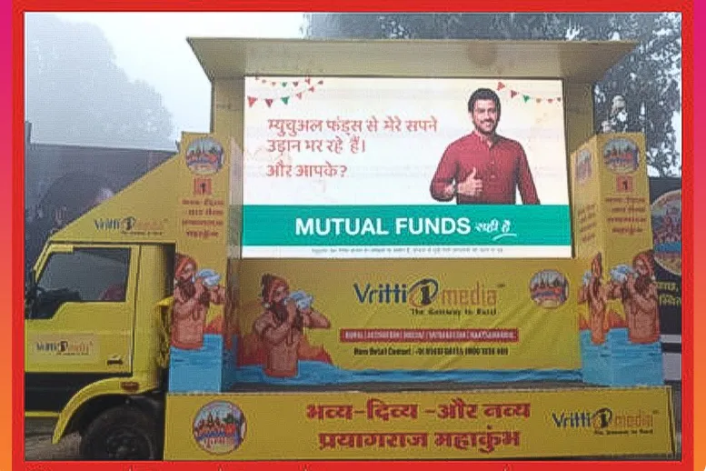
AMFI has launched the Bharat Nivesh Run, which combines financial
education with physical fitness. This initiative aims to spread awareness about mutual
funds and financial planning through interactive sessions and community engagement.
They have buses in busy areas offering videos on mutual funds, quizzes, and phone
charging stations. They also giveaway a 12-year Hindu calendar (Nivesh Panchang). Brand
also arranged “Kalash” giving warm water and information about SIP.
Blinkit Mahakumbh Campaign 2025
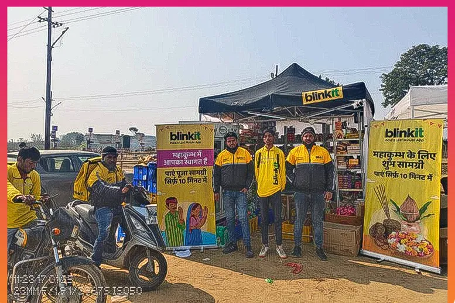
Blinkit established a 100 sq. ft. temporary store at Mahakumbh that provides services to
devotees from basic things like chargers, towels, fruits and vegetables to puja
commodities such as jal bottles. They ensure to provide everything that pilgrims may
need there.
The store is set up across key locations - Arial tent, Dome City, ITDC luxury camp, and
Devrakh. This strategy is not only convenient but raises brand awareness among people.
ITC Bingo Tedhe Medhe
ITC Bingo fused local culture with interactive booths. They have set up a chaat fusion
corner with a unique twist of taste and also set a social media zone where people
experience online interaction. They named this campaign “Bhaukal Lok”.
Shuvadip Banerjee, Chief Digital Marketing Officer, ITC Ltd. said that the brand is
combining on-ground activation, social media content and influencer collaboration. Their
aim is to celebrate culture along with fostering lasting bonds.
On top of it, they hosted Bingo Bonfire features Tedhi Medhi Mandali where pilgrims enjoy
unique flavour with live music.
Britannia
Britannia has launched the theme “Chai Jahaan, Good Day Wahaan” in
partnership with Chai Point which serves chai with a pair of Good Day biscuits. Chai is
an unbreakable routine for most people in India. It creates small joyful moments of
connection and joy.
They strategically promote their biscuits with each Indian’s love of chai.
Archana Balaraman, general manager of marketing, at Britannia, said with this campaign,
we are excited to serve tea with a pair of Britannia biscuits. A million pilgrims gather
to celebrate spirituality and togetherness, we are proud to be a part of their journey,
adding a touch of delight with a tea break during this biggest occasion.
Coca Cola Marketing Strategy on Mahakumbh
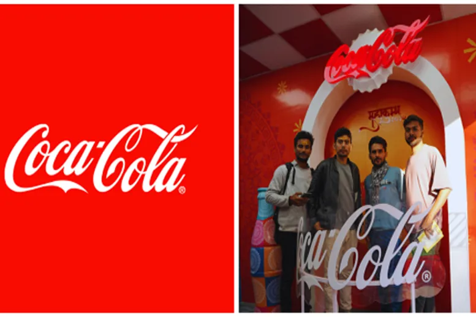
Coca-Cola launched the “Maidan Saaf” campaign in which they distributed recyclable
jackets to workers and volunteers, and set up women's changing rooms, hydration carts,
and food courts. They have distributed 21,500 jackets made of recycled PET, distributed
into sanitation workers, boatmen, and waste management volunteers.
They also set up 1000 women’s changing rooms along the 12 km stretch to the river ghat,
built from recycled multi-plastic layers, illustrated by local artists.
They created a 25 ft. gigantic wall of Coca-Cola refrigerator filled with all kinds of
beverages from Coke to Mazza.
Coca-Cola always goes with big-bang marketing ideas that leverage their business and
reputation. This time, the brand has tried the blend of sustainability and social
responsibility in Mahakumbh.
Dabur
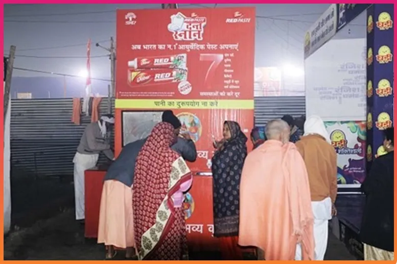
Dabur indulges in various activities such as interactive stalls, health camps, outdoor
advertising, branded merchandise, digital campaigns, influencer collaborations and
community initiatives in Mahakumbh 2025.
They install stalls to demonstrate the samples of their popular products such as Dabur
Honey, Red paste, Dabur Amla, Vatika, Hajmola, Honitus, etc.
The brand is running social media campaigns using hashtags like #DaburAtKumbh to engage
with a wider audience online. Collaborated with influencers to share their experiences
of Kumbh and promote Dabur products.
Dabur supports sanitation to maintain cleanliness and conducts educational programs on
health and wellness in Kumbh Mela.
Dettol Campaign (Dettol ka dhula Kumbh Mela)
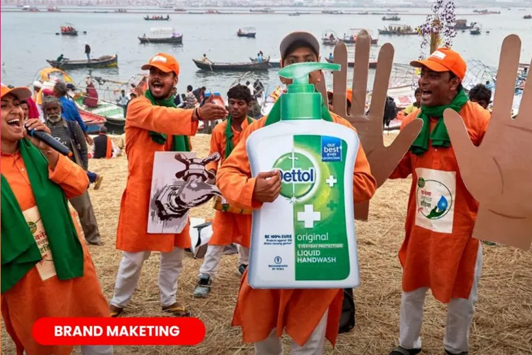
Dettol set out the “Dettol ka dhula Kumbh Mela” campaign instead of
hoarding ads. On the ground level, they deployed hand-washing agents in Kumbh to make
people wash their hands. They even distributed 66,000 Dettol hand sanitizer packs,
through this they managed to save more than 3 million litres of water.
Through this initiative, people experienced the product firsthand and even the brand was
able to make the Kumbh Mela experience much better for everyone.
According to the report, 6.7 million hands were cleansed. This ensures pilgrims' safety
and spreads awareness for washing hands.
Eveready Lightning
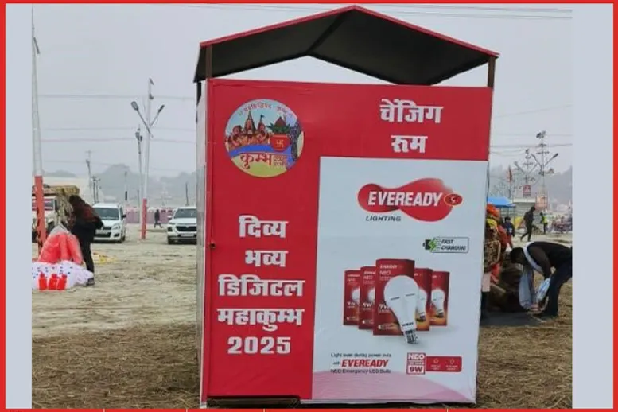
Eveready provided 5000 siren torches with 100 decibel sound alarms to police personnel
for enhanced safety and crowd management. They took charge of illuminating the whole
Mahakumbh Mela by installing 13,000 LED lights including 150W streetlights and 250W
floodlights
This initiative illuminates the place at night in Mahakumbh. This initiative spotlights
the commitment to social responsibility, crowd management, and cultural integration
across this event.
Ixigo
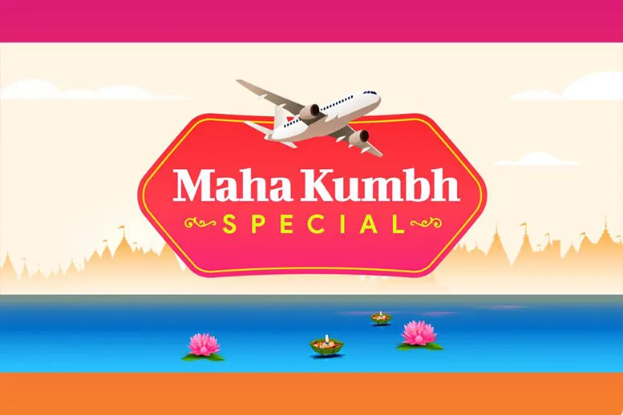
Ixigo has launched an innovative campaign focusing on travel, and partnership with Indian
Railways for special trains and services during Mela 2025. It has introduced microsites
that serve as a one-stop destination for planning travel logistics, booking hotels,
trains and buses.
Microsites provide comprehensive guides to the special events in Mahakumbh such as
auspicious bathing dates, rituals, and activities. The microsite features engaging
videos that highlight iconic landmarks, temples, and local stalls which is an awesome
experience.
Kuku FM ( Bhakti suniye, Bhakti kariye 2025)

Kuku FM has a tagline for this Kumbh “Bhakti suniye, Bhakti kariye” and
launched its spiritual “Bhakti App”. This app has 500+ shows, audiobooks, and bhajans
including Mahabharat, Ramayan, and Bhagvat Gita. The Brand has launched a digital
campaign and decided to base 5-8% of its advertising and marketing on Mahakumbh for
2025.
ITC Mangaldeep
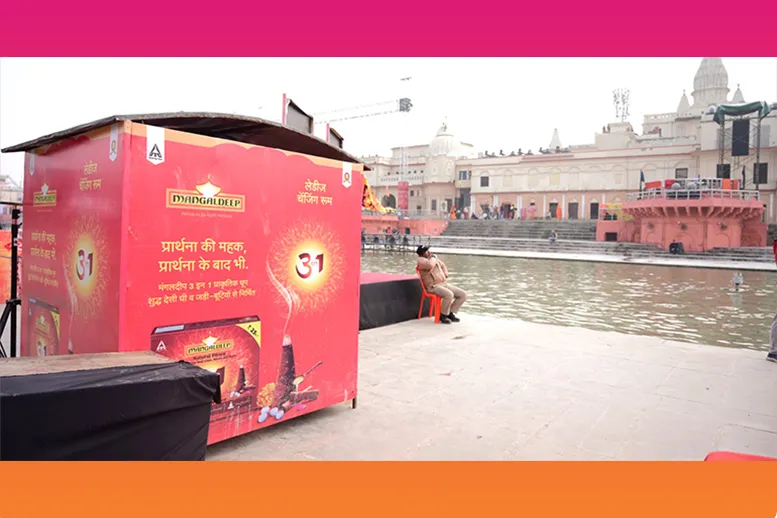
Mangaldeep introduced 360 augmented reality Mahakumbh experience. This initiative has
been taken to offer devotees a spiritual and memorable enriching statement.
Gaurav Tayal, Division CEO stated that placing branding elements and activities
strategically in high-traffic areas like Sangam Ghat, temples, and important pathways
ensures maximum visibility and connection with the audience. Additionally, they organise
virtual deep daan ceremonies.
Reliance Jio (JioKumbh Campaign 2025)
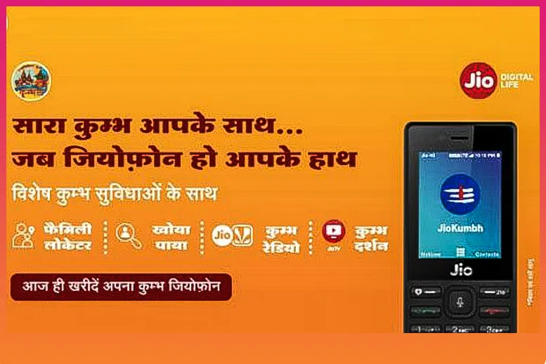
Reliance Jio set up free wifi hotspots at multiple locations in Mela and also launched
the app “JioKumbh” for this event to navigate locations, access important
information, and reconnect with lost family members. They wanted to show the ability and
reliability of their network in this chaos.
Reliance FMCG established hydration stations and resting zones for
pilgrims ensuring people comfort and a challenging journey.
Pepsico
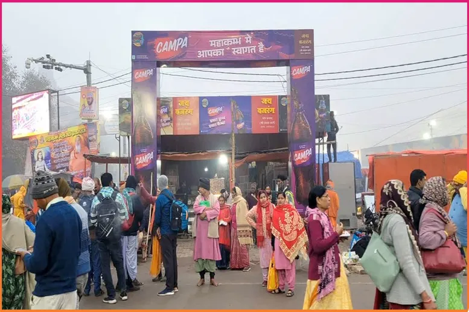
Pepsico Sting introduced 500 charging points and energy drink stalls, while Mountain
Dew’s 30-feet-illuminated bottle serves as a striking navigation marker. Pepsico kindly
paid attention to the necessity of people in Kumbh and associated their marketing
strategy with it.
Maggi (2 Minutes Apno ke liye)
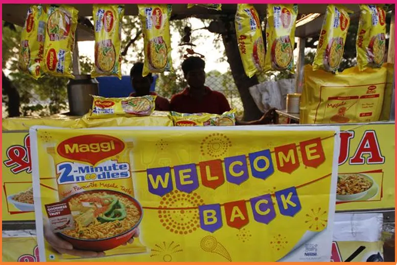
Nestle Maggi is making a significant initiative with its “2 Minutes Apno ke
liye” campaign focusing on sustainability and connections. They set
up resting pods called Maggi Corner where people can relax and rejuvenate, also they
provide warm blankets and meals to the waste management workers.
The campaign also emphasizes responsible waste management and environmental prevention.
Omnigel & Volini (Rahat Seva Kendra)
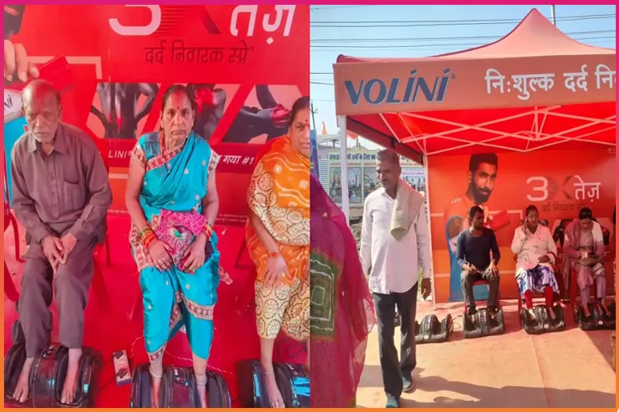
Omnigel established “Rahat Seva Kendra” to support pilgrims
to medicate their physical strain. The long and challenging ways in the chaos cause
discomfort in the body. There are different age groups of people attending this event,
including older ones who can get foot massages in the Kendra allowing them to feel
refreshed and energized.
Volini also set up 7 massage camps in Mahakumbh. These camps provide free services to
pilgrims and it is providing 7000 - 8000 massages daily with 40,000 visitors each
day.
Isn’t it a great initiative to help and add value to business?
Tata Group
Tata Group has launched the “Swachh Bharat, Swachh Kumbh”
campaign in Mahakumbh 2025. They organize cleanliness drives to promote hygiene and
sanitation, set up toilets, and handwashing stations for pilgrims.
Tata Group is running an awareness campaign about sanitation and also support sanitation
workers. Tata Group is renowned for its contribution and great marketing strategy.
Mankind Pharma
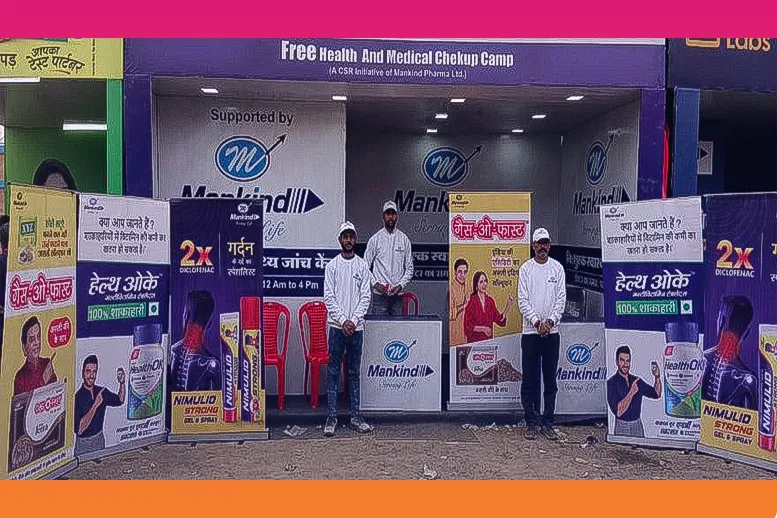
Mankind Pharma has launched a 45-day healthcare mission in Prayagraj
that is open daily from 12 pm to 4 pm. They provide free health check-ups, monitor BP,
and first aid services to pilgrims. They are offering hundreds of free check-ups daily
and address the medical needs to the vast number of pilgrims.
Paytm ( Bhavya Mahakumbh QR code for events)
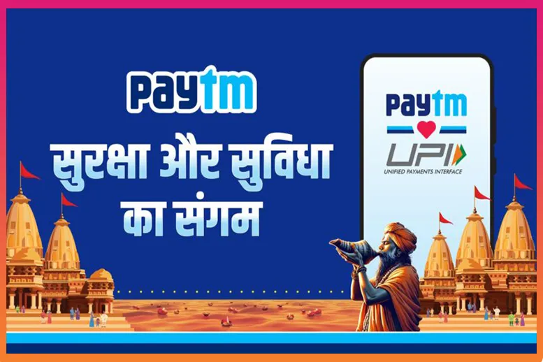
Paytm has launched a comprehensive marketing strategy to enhance the digital payments
experience for vendors, and pilgrims.
The brand launched a Bhavya Mahakumbh QR code for events, deployed
soundboxes and card machines to facilitate easy payments. People can use these payment
options including linking their RuPay credit cards.
Suraksha and Suvidha ka mahasangam campaigns offer pilgrims a chase to win Paytm Gold
worth 1 crore and daily cashback through the lucky draw.
Paytm’s strategy highlights making transactions easy and rewarding, promoting a
cashless economy.
Uber & Ola
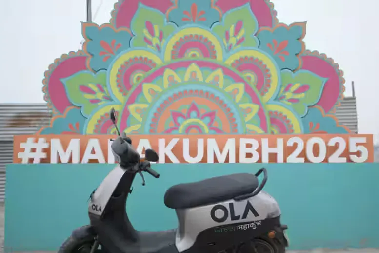
Uber has partnered with the Airport Authority and created a seamless
experience for pilgrims to reach Maha Kumbh safely.
In collaboration with the event organizer, Ola has taken initiatives in
Kumbh SahAyak apps by India’s first AI unicorn “Kritrim”. The brand
deployed 1000 electric scooters in the field of Mahakumbh to provide a sustainable and
cost-effective travel option. The Ola consumer uses this electric vehicles and
affordable cabs to visit nearby.
Conclusion:
- This is how big brands are making a significant impact at the Mahakumbh 2025 through
creative marketing ideas that fulfil the requirement of mela and create brand
awareness too.
- One thing to note is that brands are not only focusing on advertising and marketing
but also paying attention to the environment, sustainability, and reusability.
- Brands are attentive to add value along with profit in the market as we have seen
Tata, Volin, Reliance, and Amazon such companies prepare all
comfort ideas for pilgrims and offer free services too.
- Top FMCG companies like Dabur, ITC and various brands are leading
the charge, each spending approximately 120 Cr. Airtel and Jio have pushed Rs 80-100
cr to promote 5G.
- This isn’t just a religious gathering but a marketing goldmine. The streets of
Mahakumbh are painted with ads. Brands have poured Rs 750 Cr into outdoor promotions
like hoarding, banners, and kiosks.
- The hospitality sector has been reaching a new profit scale. This time around there
are 1 lakh 60 thousand tents that have been set up for visitors. Floating bridges
have made people move around.
- Approximately, 218 hotels, 204 guest houses, and 90 Dharamshala across the entire
city from affordable range to luxurious stay places.
- Mahakumbh is the greatest event of all time, in terms of celestial, cultural,
religious, business, financial, and connection across the world.